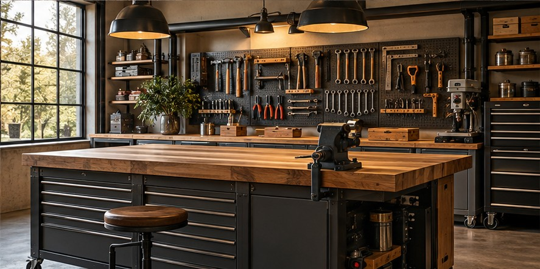

Medical & Dental Practices
Reduce front-desk pressure while protecting sensitive decisions and keeping staff in control.
- Patient inquiry routing
- Appointment and reminder workflows
- Administrative follow-up
Industries
Choose your industry to see where AI can improve customer response, follow-up and daily operations without removing human control.
Strong-Fit Industries
A strong first project has measurable volume, repeated steps and a clear person responsible for reviewing results.
Reduce front-desk pressure while protecting sensitive decisions and keeping staff in control.
Organize new inquiries and internal knowledge without presenting AI output as legal advice.
Respond consistently across buyer, seller, tenant and maintenance conversations.

04Turn calls and website inquiries into organized quotes, bookings and dispatch-ready information.
Connect sales inquiries, service appointments and inventory questions into one follow-up flow.
Support document-heavy work while reserving financial and coverage decisions for qualified people.
Help guests before and after a visit while improving local marketing consistency.
Move membership inquiries toward bookings and retain customers with timely communication.
Make product discovery and order assistance available without losing brand voice.
Standardize consultation intake, proposals and repeatable knowledge delivery.
Your Industry
If your team answers the same questions, processes similar requests or repeats the same follow-up every week, there may be a practical AI opportunity.
Build Your AI Plan